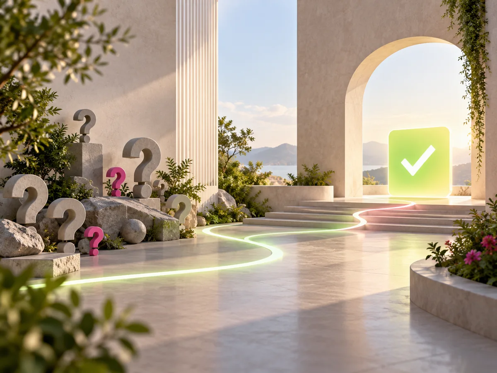

FAQ
Ihre Fragen. Klare Antworten.
Wie entsteht das Angebot für meine Website?
Nach einem unverbindlichen Gespräch erhalten Sie ein individuelles Angebot. Der Umfang richtet sich nach den benötigten Seiten, Funktionen, Inhalten und der gewünschten Begleitung. So wissen Sie vor dem Projektstart genau, was enthalten ist.
Wie lange dauert die Umsetzung?
Das hängt vom Umfang, der Verfügbarkeit von Texten und Bildern sowie den gewünschten Funktionen ab. Kleine Websites können innerhalb weniger Wochen fertig sein. Den realistischen Zeitplan besprechen wir vor dem Start.
Benötige ich eigene Texte und Bilder?
Vorhandene Unterlagen sind eine gute Grundlage, aber nicht zwingend. Auf Basis unseres Gesprächs erstelle ich verständliche Website-Texte. Bilder können Sie bereitstellen; auf Wunsch erstelle ich Portraits, Gruppenfotos sowie Arbeits- und Detailaufnahmen gegen Aufpreis passend zu Ihrem Webauftritt.
Funktioniert die Website auch am Smartphone?
Ja. Jede Website wird responsiv umgesetzt und für die Nutzung auf Smartphone, Tablet und Desktop geprüft.
Wird meine Website bei Google gefunden?
Die technische und inhaltliche Basis für Suchmaschinenoptimierung ist Teil der Umsetzung: klare Überschriften, gute Ladezeiten, Meta-Daten und ein lokaler Bezug zu Ihrer Region. Eine bestimmte Platzierung kann seriös niemand garantieren. Für eine vertiefte Optimierung biete ich zusätzlich SEO & Sichtbarkeit an.
Was passiert nach dem Onlinegang?
Auf Wunsch übernehme ich Updates, Backups, Hosting und kleinere Änderungen. Sie können zwischen verschiedenen monatlich kündbaren Betreuungspaketen wählen.
Kann ich meine bestehende Domain behalten?
In den meisten Fällen ja. Ich unterstütze Sie beim Umzug oder bei der technischen Einrichtung, damit Ihre vorhandene Webadresse weiterhin verwendet werden kann.
Arbeiten Sie nur in der Steiermark?
Der persönliche Schwerpunkt liegt in Krieglach, im Mürztal und der gesamten Steiermark. Durch digitale Abstimmung können Projekte aber auch österreichweit umgesetzt werden.
Ihre Frage ist nicht dabei?
Schreiben Sie mir einfach.
